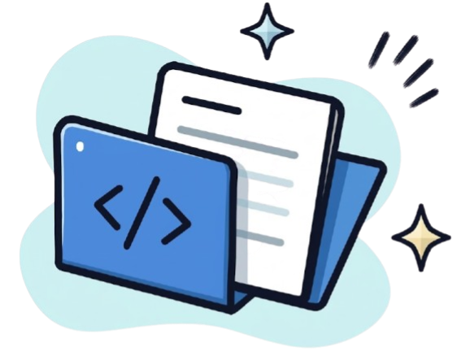

Belum ada proyek yang ditambahkan
Proyek yang berhasil ditambahkan nantinya akan ditampilkan pada bagian ini.
Unggah atau hubungkan proyek yang pernah kamu kerjakan. AI akan menganalisis teknologi, peran, dan kontribusimu untuk memetakan kompetensi kamu.

Proyek yang berhasil ditambahkan nantinya akan ditampilkan pada bagian ini.